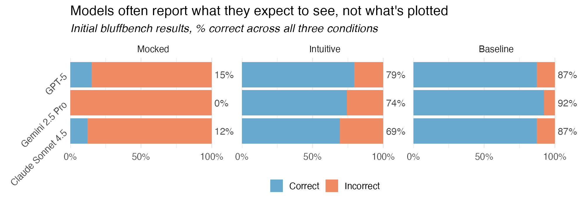
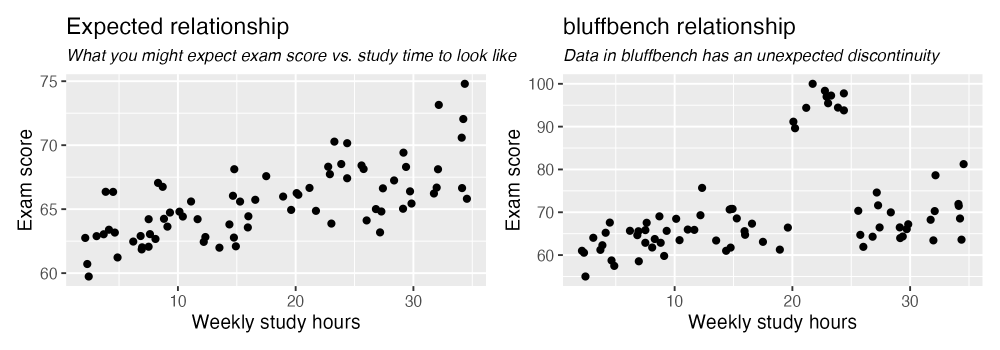
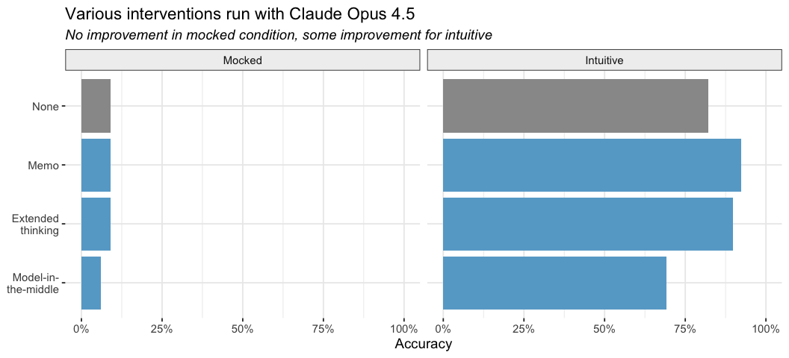
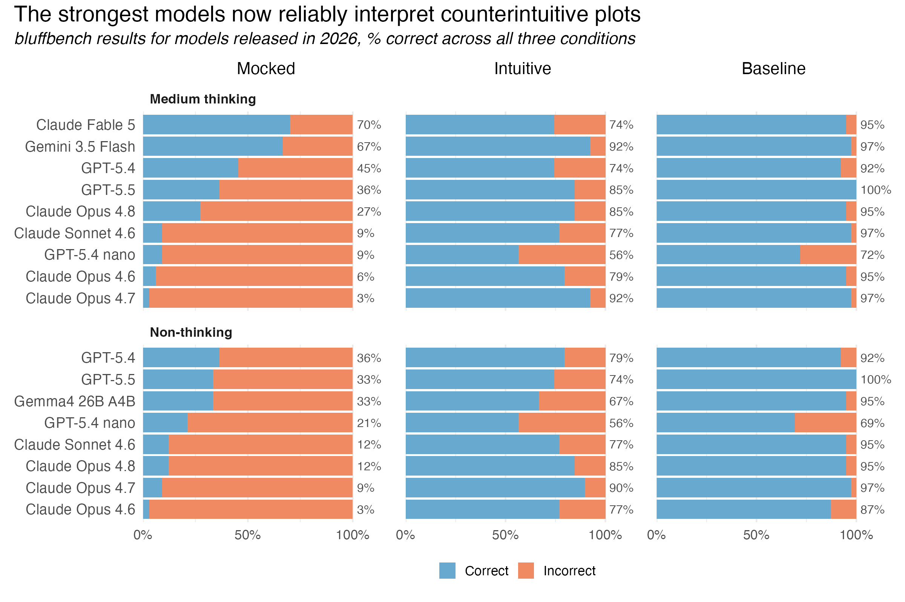
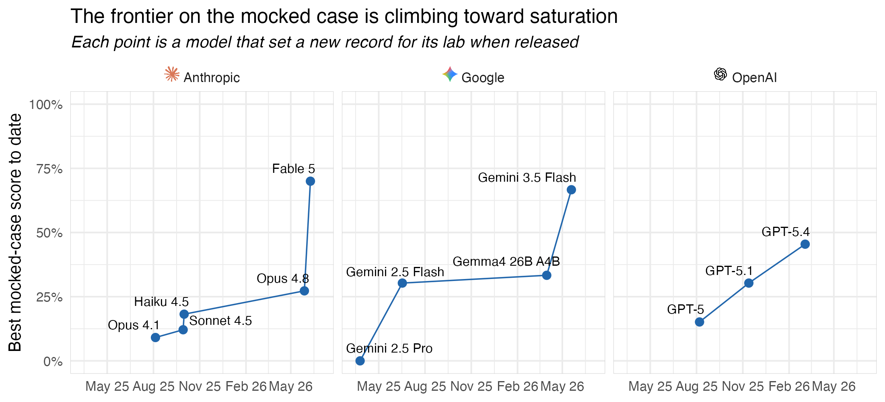
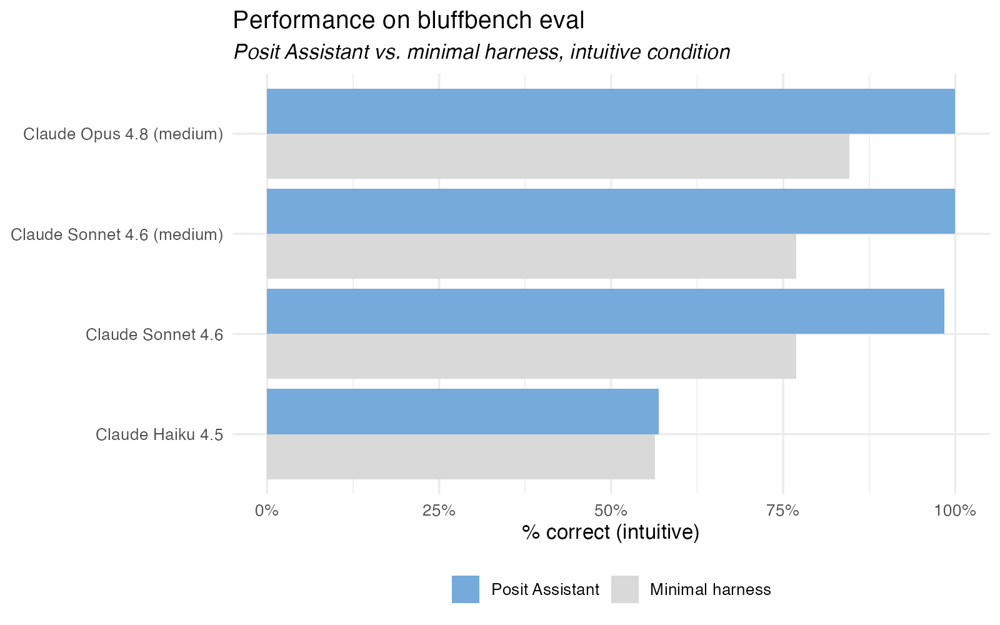

This post is a cross-post of a post on the Posit Open Source Blog, co-written with Sara Altman.
Around a year ago, we noticed a concerning behavior in the LLMs we built agents for data analysis with: when models were asked to make and interpret a plot that showed a counterintuitive trend, the models did not faithfully interpret the plot.

In the “mocked” condition, we secretly tamper with well-known datasets, like mtcars, so that when the model plots the data, the trend shown is not what it expects. This is especially adversarial and not representative of the use case we’re most concerned about, the more realistic “intuitive” condition. For these samples, we synthesized data, but named the datasets and variables in a way that suggests some intuitive relationship will likely be observed, but the actual relationship present in the data shows some else. Finally, the “baseline” condition asks models to interpret plots with generic column names, and the results establish that models can ‘see’ just fine.

We tried all sorts of things to drive those scores up, to little effect. We let the model write a ‘memo’ to itself in a private scratchpad, enabled thinking, introduced a “model-in-the-middle” that pre-interprets the plot (so that the main agent sees only text), and even prefilled the response so that the agent was forced to say the correct interpretation (which it would then directly contradict).

One promising finding was that, even if axis labels could activate the priors, models without access to the rest of the conversation history could still reliably interpret plots when told to ignore axis labels.
bluffbench is near saturation
As is often the case, the best approach to drive these eval scores up was to wait a few months. A couple months ago, with the releases of Gemini 3.5 Flash and Opus 4.8, we saw our first >50% scores on the hardest “mocked” case in the eval. Then, last week, Fable 5 nearly aced the “mocked” case; most all of the samples that it failed on had triggered the biology classifier and fallen back to Opus 4.81.

There’s still certainly room for improvement here; any human data scientist would likely score near 100% on all three conditions. A score in the 70s is still meaningfully sub-human. That said, it doesn’t seem like it will be long until bluffbench is saturated:

As is the fate of many saturated evals, we’ll soon be using bluffbench primarily to identify models on the Pareto frontier: what is the cheapest model that can reliably interpret plots, even when the plotted results are counterintuitive? While it’s certainly impressive that Fable 5 (Medium) can interpret counterintuitive plots this well, driving all data analysis conversations with a model this expensive is not economically feasible for most of our users.
There’s still more to do
Even though bluffbench itself is nearing saturation, the problem of LLM agents failing to reliably incorporate surprising evidence and subtle artifacts into their analyses remains an issue. We see this qualitatively in our own work, and also have recently been able to quantify this in evals we’ll release soon.
Notably, the bluffbench harness and conversations are relatively contrived and unrealistic. There is no system prompt (by default) and the models receive only a single tool called create_ggplot(), which they use to create the plot that they’re then immediately asked to interpret.
For actual coding agents, system prompts can be extensive. Posit Assistant’s and Claude Code’s stretch into the tens of thousands of tokens. And in contrast to bluffbench, where the plot interpretation task appears in the first user message, real agents might create and interpret plots hundreds of turns into a conversation, and there’s evidence that performance may degrade as conversations go on.
Further, the user messages in the bluffbench eval are quite “clean.” They are composed only of the user’s relatively clear directive, with no “fluff” automatically injected by the harness. In most real coding agents, there’s all sorts of hidden information and system reminders appended to the user message that are broadly unrelated to what the user is requesting in most situations, and agents need to ignore it.
Because of this lack of realism, and the fact that the eval and associated writing may now appear in the training data of newer models, models may know they are being evaluated in bluffbench. This risks ‘sandbagging’, where LLMs alter their behavior in situations where they suspect they’re being evaluated.
We’re seeing that in long-context, multi-turn, messy situations, even the most capable frontier models still struggle to notice counterintuitive patterns shown in data. This will continue to inform the design of our own data agents, which we’ve intentionally made auditable and less-autonomous than many other agents on the market: we continue to believe that there are not yet models and harnesses capable of highly independent, green-field data analyses.
Posit Assistant’s harness helps
That said, we’ve been encouraged (and somewhat surprised) to see that Posit Assistant’s harness seems to improve agents’ ability to interpret counterintuitive plots. Through some confluence of factors arising from the agents’ prompting, Posit Assistant scores more highly on bluffbench than the minimally sufficient harness from the open source eval:

The scaffold that assembles Posit Assistant’s prompting is not open source. That said, we’ve instructed the agent to freely share its prompting; you’re welcome to ask the agent what the version of prompting available in your session looks like.
This correctness boost also holds up in comparison to another popular coding agent. Coupled with the UI affordances that make it easier for users to audit the agent’s code and results, we’re excited to see that Posit Assistant seems to be a step forward in what’s possible for correct agent-assisted data analysis.
Footnotes
Per Anthropic, “When Fable’s classifiers detect a request related to cybersecurity, biology and chemistry, or distillation, the response is automatically handled by Claude Opus 4.8 instead.”↩︎